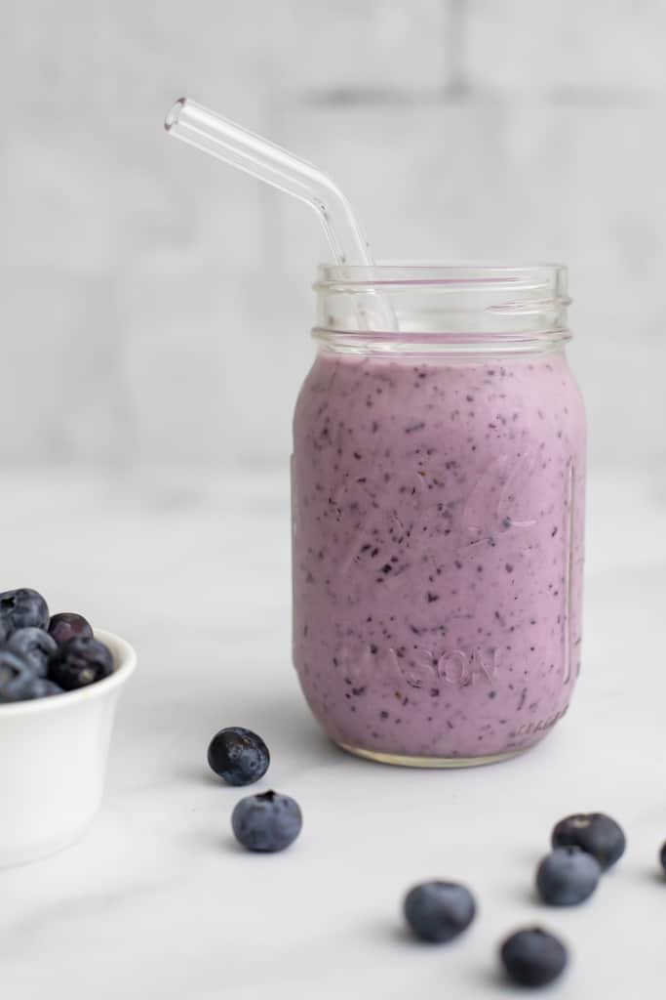

Blueberry protein shake

Description
This recipe is a shake and you can make shakes in a lot of different ways. I'll show you a recipe that's lite
while looking at calories and has benefit of being high in protein.
Nutrients of this meal are: 285 kcal, 5g fat, 32g carbs, 31g protein.
Ingredients
- 3/4 cup unsweetened almond milk
- 1/2 cup full greek yogurt
- 1 scoop vanilla protein powder
- 3/4 frozen blueberries
- 3-4 ice cubes (depends how thick you want your shake to be)
- OPTIONAL: 1 tbsp honey
Preparation
- Add your ingredients into a blender
- Blend for a minute
- If it's to thick for your taste you can add more milk
- Just have in mind that adding more ingredients will change nutrients!
- After you get texture you want serve and enjoy!